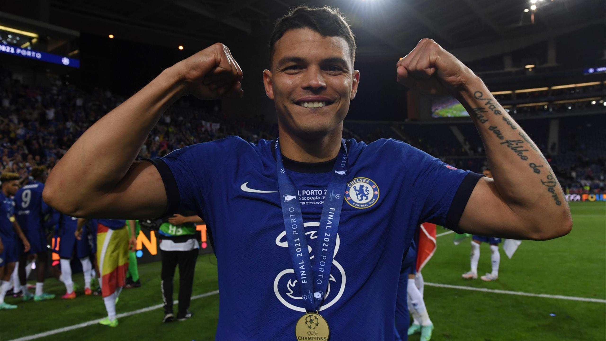

THIAGO SILVA
THIAGO SILVAธิอาโก้ ซิลวา ได้รับการยกย่องให้เป็นหนึ่งในกองหลังที่ดีที่สุดและประสบความสำเร็จมากที่สุดของโลกตลอดช่วงทศวรรษที่ผ่านมา โดยผ่านการคว้าแชมป์มาแล้วที่ประเทศบราซิล, อิตาลี, ฝรั่งเศส รวมถึงการแข่งขันระดับชาติ เช่นเดียวกับความสำเร็จส่วนตัวมากมาย
นอกจากความรวดเร็วและพละกำลัง ทำให้เขาเป็นปราการหลังที่แข็งแกร่งทั้งบนพื้นและลูกกลางอากาศ จนได้รับฉายา ‘สัตว์ประหลาด’ จากสื่อประเทศบราซิลและฝรั่งเศส เขายังมีความนิ่งและมีเทคนิคการเล่นบอลจากตำแหน่งเซ็นเตอร์แบ็ค รวมทั้งประสบการณ์เปี่ยมล้นในฟุตบอลระดับสูงสุด ดาวเตะรายนี้เคยสวมปลอกแขนกัปตันทีมปารีส แซงต์-แชร์กแมงก์, เอซี มิลาน และทีมชาติบราซิล
ธิอาโก้ ซิลวา ยอมรับด้วยตัวเองว่าการเล่นในพรีเมียร์ ลีกนั้นเป็นเรื่องที่ยาก เขาทำหน้าที่กัปตันทีมและสร้างความผิดพลาดส่วนตัวส่งให้เวสต์ บรอม มีสกอร์ขึ้นนำพวกเรา 3-0 ในครึ่งแรกของเกมลีกนัดที่ 3 ในฤดูกาล ก่อนที่สิงห์บลูส์ฮึดสู้กลับมาตีเสมอ 3-3
หลังจากนั้นไม่นาน เขากลับมาสู่ทีมและทำผลงานได้อย่างยอดเยี่ยม โดยเฉพาะในนัดที่พวกเราเอาชนะเวสต์ แฮม 1-0 จากนั้นเป็นการลงเล่นในแชมเปี้ยนส์ ลีก รอบรองชนะเลิศกับเรอัล มาดริดทั้ง 2 นัด ความสามารถในการครองบอลและการอ่านเกมของเขาถือว่าโดดเด่นที่สุด
การแข่งขันรอบชิงชนะเลิศกับแมนเชสเตอร์ ซิตี้ที่ปอร์โต้ เมืองที่มีความหมายอย่างมากกับธิอาโก้ ซิลวา เพราะเขาเคยค้าแข้งสมัยเป็นดาวรุ่ง เริ่มต้นขึ้นอย่างน่าผิดหวัง เพราะเขาโดนเปลี่ยนตัวออกด้วยอาการบาดเจ็บ ก่อนที่ไค ฮาแวร์ตซ์ จะยิงประตูชัย
อาการบาดเจ็บโคนขาหนีบ อาจทำให้เขาต้องออกจากสนามไปตั้งแต่ต้นเกม แต่สิ่งดังกล่าวมิได้หยุดยั้งเขาสำหรับการเฉลิมฉลองชัยชนะหลังสิ้นเสียงนกหวีดหมดเวลา หลังจากล้มเหลวหลายครั้งในการพยายามคว้าถ้วยใบนี้ตั้งแต่ตอนเล่นที่อิตาลีและฝรั่งเศส ในที่สุดเขาก็ทำสำเร็จตั้งแต่ปีแรกในการค้าแข้งที่อังกฤษ เขาบอกว่าสิ่งดังกล่าวถือเป็นไฮไลต์ในอาชีพค้าแข้ง ซึ่งไม่นานหลังจากนั้น เชลซีได้ตัดสินใจขยายสัญญาของนักเตะออกไปอีกหนึ่งปี
ธิอาโก้ ซิลวา เป็นนักเตะคนสำคัญของทีมชาติบราซิล และเจ้าตัวก็อยู่ในทีมชุดแชมป์โคปา อเมริกา ที่มาราคาน่า สเตเดี้ยมเมื่อปี 2019 เขาได้สวมปลอกแขนกัปตันในทัวร์นาเม้นต์ถัดมา นั่นคือการแข่งขันโคปา อเมริกาที่ประเทศบ้านเกิดในปี 2021
บราซิลเก็บ 3 คลีนชีต และเสียแค่ 1 ประตูในการเก็บชัยชนะ 100% ตลอด 4 นัดที่ ธิอาโก้ ซิลวา ลงสนามพาทีมผ่านเข้าชิงชนะเลิศ หลังได้พักไป 2 นัดในรอบแบ่งกลุ่ม อย่างไรก็ตามเขาไม่สามารถช่วยชาติหลีกเลี่ยงความพ่ายแพ้ 1-0 ต่ออาร์เจนติน่าในแมตช์ชิงดำได้
กองหลังรายนี้ ลงเล่นนัดที่ 100 ให้กับ "เซเลเซา" ในเดือนตุลาคม ปี 2021 โดยลุกจากม้านั่งสำรองมามีส่วนร่วมในเกมที่บุกเสมอโคลอมเบีย 0-0
SOCIAL MEDIA
 |
|